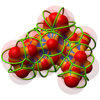
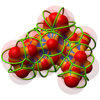

BioVis 2011 Paper
Semantically Steered Visual Analysis of Highly Detailed Morphometric Shape Spaces
A common technique in 3D shape analysis is to describe shape variability using a statistical deformation model (SDM). In contrast to the use of sparse landmark data for volume data this SDM is based on dense registrations of the input shapes. For a valuable exploration of the shape space in the setting of biological morphometrics we identified two prominent objectives for visual investigation. The first objective is to detect possible shape variations between anatomically different groups of individuals. The second is to integrate and exploit expert knowledge about relevant regions on the shapes.
To meet the first objective, we advocate the use of dimensionality reduction methods combined with a parameterization defined on user specified classifications. This idea was already successfully applied in data-driven reflectance models and also turns out to be valuable in the context of biological morphometry, as it allows for intuitive exploration of shape variations. The second objective can be achieved by an appropriate weighted linear analysis which delivers a better approximation of shape variations in local neighbourhoods of a user defined region of interest.
The methods were applied to real-world biological datasets of rodent mandibles and validated in cooperation with the MPI for Evolutionary Biology. For this purpose, we provide an interactive dynamic visualization of the shape space based on a custom GPU raycaster. A special feature of our implementation is that it builds the SDM directly on dense registrations of the volumes and does thereby not rely on a specific non-rigid registration method.
To meet the first objective, we advocate the use of dimensionality reduction methods combined with a parameterization defined on user specified classifications. This idea was already successfully applied in data-driven reflectance models and also turns out to be valuable in the context of biological morphometry, as it allows for intuitive exploration of shape variations. The second objective can be achieved by an appropriate weighted linear analysis which delivers a better approximation of shape variations in local neighbourhoods of a user defined region of interest.
The methods were applied to real-world biological datasets of rodent mandibles and validated in cooperation with the MPI for Evolutionary Biology. For this purpose, we provide an interactive dynamic visualization of the shape space based on a custom GPU raycaster. A special feature of our implementation is that it builds the SDM directly on dense registrations of the volumes and does thereby not rely on a specific non-rigid registration method.
BioVis 2011 Papers and Abstracts


 
